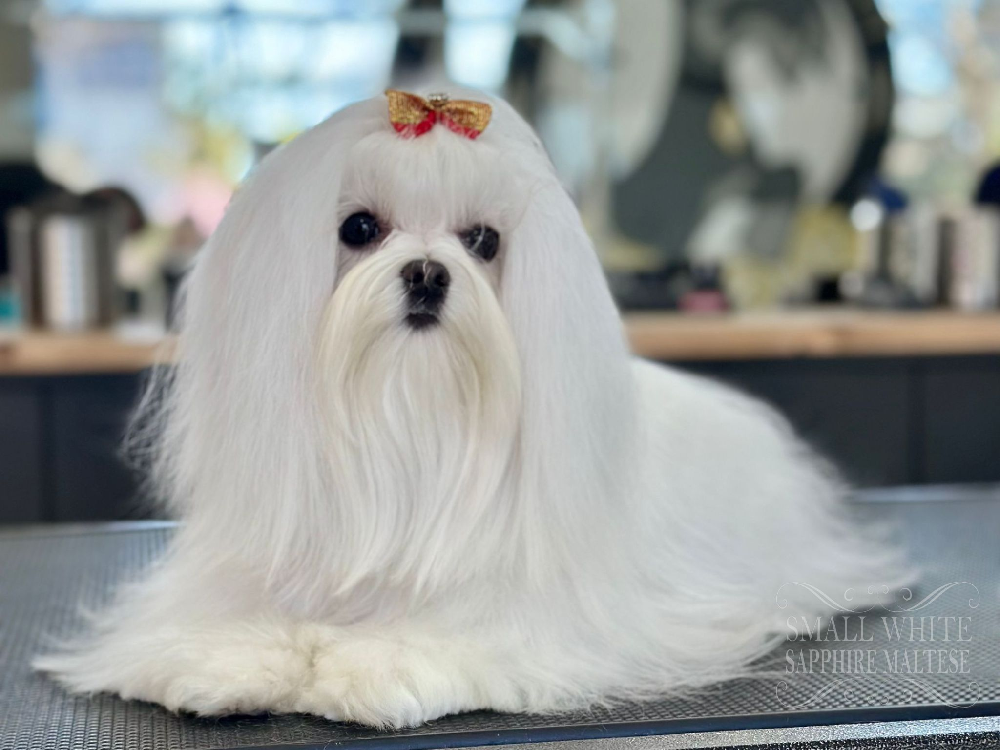

Presentación

El Bichón Maltés es un perro de raza pequeña, elegante y compacto, con un pelaje largo, sedoso y de color blanco puro. Suele medir entre 20 y 25 cm y pesar alrededor de 3 kg, con ojos oscuros y expresivos y una cola curvada sobre la espalda. Su apariencia delicada y porte distinguido lo hacen fácilmente reconocible. ([consumer.es](https://www.consumer.es/mascotas/maltes.html?utm_source=chatgpt.com))
Personalidad
De carácter alegre y juguetón, este perro es muy afectuoso y leal con su familia. Su sociabilidad y curiosidad lo convierten en un compañero activo y vigilante, aunque generalmente se adapta bien a la vida en interiores y es tranquilo. ([consumer.es](https://www.consumer.es/mascotas/maltes.html?utm_source=chatgpt.com))
Origen
Originario de la región del Mediterráneo, el Bichón Maltés ha acompañado a familias nobles durante siglos. Su nombre refleja su asociación con Malta, y la raza se consolidó como perro de compañía elegante y refinado. ([consumer.es](https://www.consumer.es/mascotas/maltes.html?utm_source=chatgpt.com))
Salud
Suelen vivir entre 12 y 15 años y, aunque son generalmente saludables, pueden presentar luxación de rótula, problemas dentales y oculares. Las revisiones periódicas y una alimentación equilibrada ayudan a prevenir estos problemas. ([consumer.es](https://www.consumer.es/mascotas/maltes.html?utm_source=chatgpt.com))
Aseo
El pelaje largo y sedoso requiere cepillado diario y baños regulares para mantenerlo limpio y libre de enredos. También es importante cuidar dientes, uñas, oídos y ojos para garantizar su bienestar. ([isbestial.com](https://isbestial.com/blog/bichon-maltes-maltese-guia-completa-de-cuidados/?utm_source=chatgpt.com))
Nutrición
Debido a su pequeño tamaño y metabolismo rápido, necesita una dieta equilibrada específica para razas pequeñas, distribuida en varias comidas diarias y adaptada a su nivel de actividad y edad. ([isbestial.com](https://isbestial.com/blog/bichon-maltes-maltese-guia-completa-de-cuidados/?utm_source=chatgpt.com))